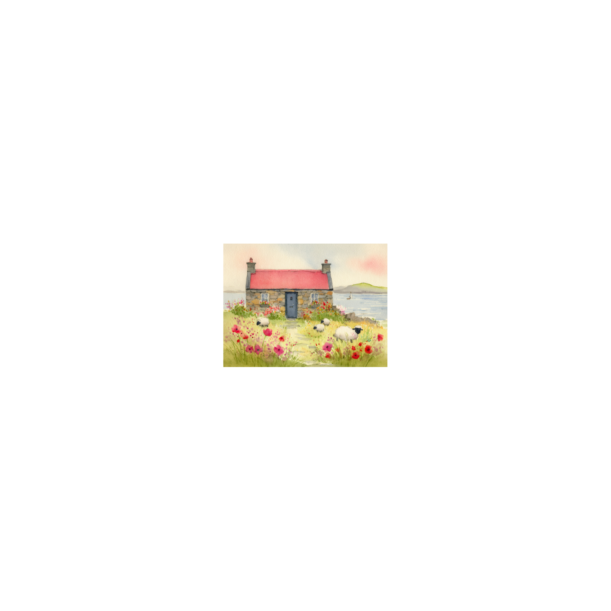

Willow Cottage, Matchem Park
Willow Cottage, Match-em Park

Coffee Machine
Listen
Let’s take a look together.
Press the power button on the top to turn the machine on.
When the green light comes on, it’s ready.
Lift the lever at the front and place a coffee pod inside,
with the flat side facing down.
Lower the lever until it clicks into place.
Place your cup on the drip tray under the spout.
Then press espresso for a small coffee,
or lungo for a longer one.
The machine will stop automatically when your coffee is ready.
You’re all set.
Enjoy your coffee.
Lift the water tank from the back of the machine.
It’s clear plastic, with a handle at the top.
Fill it with fresh cold water, up to the max line.
Then place it back onto the machine,
and press it down gently so it sits flat.
Check the green light is on before making a coffee.
Switch the machine off,
and allow it to cool down.
Pull out the used pod container from the front.
It slides out like a small drawer.
Tip the used pods into the bin.
You can rinse the container under the tap if needed,
then shake off any excess water.
Slide it back into place until it sits flush.
Switch the machine back on,
and wait for the green light before using it again.